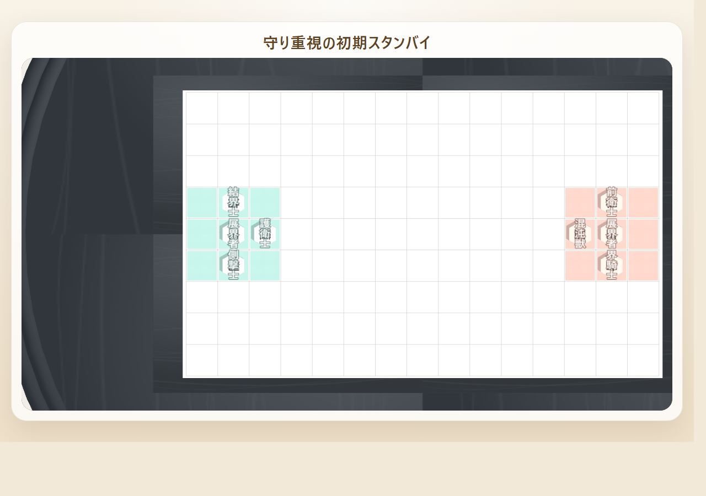
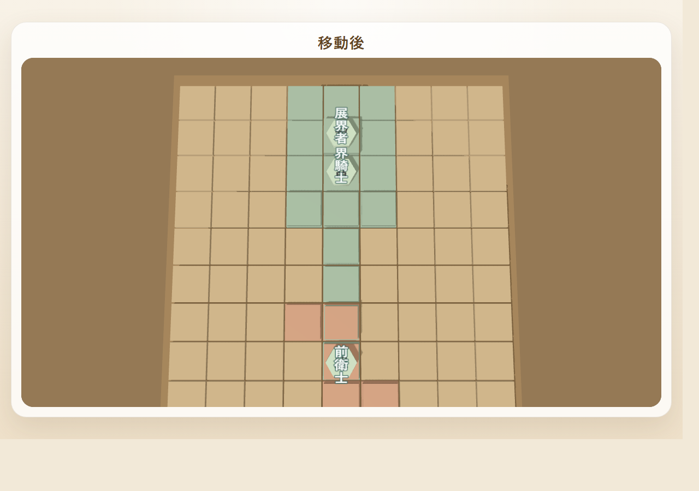

Learn to Play
対象
はじめての数局
読む目安
3〜5分で要点
役割
まず読むページ
守る
王前と本陣中央を同時に見る
残す
横の退路と受け直しを確保する
触る
3つ目の役割で相手の一本道を楽にさせない
UNFOLD 攻守ガイド
まず守る。次に伸ばす。最後に刺す。 このページは、定石の集計メモではなく、はじめて遊ぶ人が「何を大切にすれば勝ちやすいか」をつかむための解説ページです。
最初の数局は、攻める前に王前と本陣中央の安全を固めるのが基本です。
どちらのモードでも、序盤に1本の攻め筋を通すことより、 相手の直撃筋を消しながら陣地を整えることの方が安定します。
どちらか片方だけでは負け筋が残ります。
逃げ先と再防御の余地がある形が安定します。
守り切るだけでなく、相手の接続点にも圧を返します。

このページはこう使う
- なぜ最初に守りを意識した方が崩れにくいか
- 初期スタンバイの対応駒3つにどんな役割を持たせるか
- 初心者向けの守り方と攻め方の基本形
左: 自分側
右: 相手側
画像はクリックで拡大
ここでは特定のカードや駒セットを正解として押し付けるのではなく、 「何を守り、どこを伸ばすか」の考え方を先に整理します。
迷ったら、最初はこの順番で考えると崩れにくいです。
- 1枚目で王の前を支える
- 2枚目で横の逃げ道を残す
- 3つ目の役割で相手の伸び筋に触る
LEARNING PATH
最初の5分で追う学習パス
Chess 系の段階式レッスンや、ボードゲームの Learn to Play 冊子のように、最初に読む順番を固定しています。全部を覚えるより、まず3つだけ持ち帰る方が初戦で使いやすいです。
負け筋を先に知る
王捕獲と本陣中央の2つの敗因を見て、「なぜ守りが先か」を先に納得します。
3つの対応駒を役割で読む
カード名ではなく、置かれる対応駒を壁・逃げ道・妨害に読み替えて初期スタンバイの良し悪しを判断します。
守りの型を1つ持つ
最初は攻め筋を増やすより、守りの定石を1つ持ち帰るだけで十分に安定します。
このページ = Learn to Play
初戦に必要な考え方だけを、順番に追えるように絞ったページです。まずここで負け筋と初期3枚の役割をつかみます。
囲い・戦型ガイド = Field Guide
実際の配置例、囲い比較、戦型ごとの狙いを見返す参照ページです。見本を探したくなったらこちらへ進みます。
FIRST LESSON
まず守りが大切な理由
UNFOLD は王捕獲と本陣中央の2つの負け筋があるぶん、序盤の1手で崩れやすさが大きく変わります。まずは「なぜ受けを優先するのか」をここで固めます。

1. 王捕獲は最短で飛んでくる
相手は本陣中央の王を直接取れば勝ちです。だから初心者同士では、 「自分の攻めが速いか」よりも「相手の一撃を消せているか」のほうが先に問われます。

2. 王を逃がすだけでは足りない
王を助けても、本陣中央が空いたままだと展開図で上書きされて負けます。 守るときは「王の安全」と「中央の支配」の両方を見る必要があります。
序盤の合言葉は 「王の前を空けたまま攻めに行かない」 です。 攻め駒を1枚伸ばすより、相手の直撃筋を1本消す方が価値のある局面が多いです。
OPENING MINDSET
初期スタンバイで考えるべき3つの役割
対応駒3つをどう並べるかは、名前より役割で考えると応用が利きます。壁、逃げ道、妨害の3つに分けると、初見でも形の良し悪しを説明しやすくなります。
王の前を支える
最初の1枚は、王の正面に近い筋を受けられるかを重視します。ここが薄いと長射程や跳躍の着地点をすぐ作られます。
横の逃げ道を残す
王は中央から動くことがあります。動いた先でさらに詰まないように、左右どちらかに安全な退路を残しておきます。
相手の接続点を牽制する
3つ目の駒は、自分の守りを崩さない範囲で相手の一本道を切る役目です。守り切るだけでなく、相手に楽をさせない配置が大切です。

左: 自分側
右: 相手側
初心者向けの覚え方
1枚目: 壁
2枚目: 逃げ道
3つ目: 妨害か中継
3つとも攻めに寄せるより、1つは王の前、1つは王の横、1つで外へ触る の順で考えると崩れにくくなります。
現在の自己対戦検証でも、守り側は「堅守を2枚は意識した囲い」の方が長く耐える傾向があります。
COMMON MISTAKES
初心者が崩れやすい3つのミス
勝ち筋が見えていても、序盤の形が悪いと受け損ねがそのまま敗着になります。よくある崩れ方を先に知っておくと、初期3枚の置き方がかなり安定します。
左: 自分側
右: 相手側
王前を空けたまま前へ出る
中央へ出る駒を優先しすぎると、王前の受けが足りず短手数で刺さります。まず1枚は王前を支える駒に回します。
左: 自分側
右: 相手側
横の退路を自分で塞ぐ
王の周りを固めたつもりでも、横へ逃げるマスが消えると詰みやすくなります。王前の厚みと横の逃げ道はセットです。
左: 自分側
右: 相手側
3つとも攻めに寄せてしまう
盤面を広く使えているようで、実際には守りの役が不在になります。対応駒3つ全部が攻め役になる形は初心者には危険です。
迷った時は 「王前はあるか / 横の退路はあるか / 1枚は外へ触れているか」 の3つだけ確認すると、 多くの初歩的な崩れ方を防げます。
NEXT STEP
囲いと戦型は別ページに分離しました
このページは「まず何を考えるべきか」に集中できるよう、具体的な囲い例や戦型比較は専用ページへ切り出しています。実際の配置例を見ながら読みたい時は、次のガイドを使ってください。
囲い・戦型ガイド
守り重視囲い、バランス囲い、攻め寄り囲い、戦型と型、攻め・受け・回収の役割をまとめて参照できます。
このページに残したもの
守りが大事な理由、初期スタンバイの3役割、攻めと守りの定石、最初の数局で使うチェックリストだけを残しています。
DEFENSE JOSEKI
守りの定石
守りの基本は、王筋、本陣中央、受けの厚みの3点を同時に見ることです。1つ守れたように見えても、別の負け筋が残っていればまだ受かっていません。

この画像で見るポイント
- 青い候補マスが、自陣で打ち直して受けられる範囲です。
- 王前が空いているなら、まずそこを埋める手が優先です。
王の前を空けたまま返さない
次の相手手で王に届く線が見えているなら、まずそこを消します。捕獲、遮断、打ち直しのどれでも構いません。
この画像で見るポイント
- 王だけ逃がしても、中心マスが空くと負け筋が残ります。
- 本陣中央を守る駒や展開図を同時に置けるかが要点です。
王を逃がす時は中央も守る
王の退避だけで満足せず、本陣中央をそのまま取られないかまで確認します。逃げ先と中央防衛はセットです。

この画像で見るポイント
- 離れた駒を回収候補にして、守備を組み直せる状態を示しています。
- 回収は逃げではなく、次の受け直しを作る手です。
受け直せる駒は回収も使う
遠くにいて効いていない駒、取られそうな駒は回収して持ち駒に戻すと守備が立て直しやすくなります。
| 守りの視点 | 見ておくこと | 初心者向けの判断 |
|---|---|---|
| 直撃筋 | 次の1手で王を取られないか | 少し損でも、まず消す |
| 本陣中央 | 王を動かした後に上書きされないか | 空けるなら、同時に守る |
| 受けの厚み | 同じ筋を2回受けられるか | 壁1枚だけなら薄いと思う |
ATTACK JOSEKI
攻めの定石
強い攻めは、一直線に突っ込むことではなく、相手に複数の受けを要求することです。通路を先に作ってから主役駒を通すと、少ない手数でも圧力が増します。

この画像で見るポイント
- 展開図で先に道を作ると、後から通す駒の価値が上がります。
一本道より2本目
1本だけの攻めは止められやすいです。 相手本陣へ向かう接続点を2か所以上用意すると、受ける側に二択を迫れます。

この画像で見るポイント
- 王筋だけでなく、相手本陣中央にも同時に圧を返せる局面です。
王を動かしてから中央も狙う
王捕獲だけを狙うより、王を逃がした後の本陣中央も勝ち筋に含めると攻めが通りやすくなります。

この画像で見るポイント
- 前線駒を通路に入れた後の盤面で、働く位置まで届いています。
主役駒は通路ができてから出す
長射程や跳躍の強い駒でも、通路がなければ働けません。 展開図で道を作ってから通すと一気に価値が上がります。
攻める時も、「次の相手の反撃で自分の王は安全か」 を毎回確認します。 良い攻めは、守りを捨てた突撃ではなく、守りを残したまま圧を増やす攻めです。
MODE NOTE
オリジナル駒と将棋駒での見方
モードが変わっても、見るべき役割は大きく変わりません。まずは「壁になるか」「通路を伸ばせるか」「一気に刺さるか」で捉えると、両モードを行き来しやすくなります。
オリジナル駒モード
- 護衛士、結界士、界騎士は守りの土台になりやすいです。
- 滅界者、突撃士、騎乗士は道が通ると一気に王筋へ届きます。
- 最初は「守り2枚 + 攻め1枚」の感覚が扱いやすいです。
将棋駒モード
- 歩兵と金将で壁を作り、銀将で斜め筋を補うと安定します。
- 桂馬、香車、飛車、角行は通路があると急に危険になります。
- 成りはないので、まずは王前の厚みを優先するのが基本です。
どちらのモードでも共通して強いのは、「自分だけが攻めているつもりでも、相手の直撃筋を消せていなければ負ける」という点です。
CHECKLIST
最初の数局で意識するチェックリスト
最後は毎ターン使える確認項目です。迷ったときはここに戻って、王前、中央、切り替え先、回収の順に見直すと大崩れしにくくなります。
1
自分の王の前に、相手の長射程や跳躍がそのまま届く道が残っていないか。
2
王を逃がした後、本陣中央をすぐ上書きされないか。
3
初期スタンバイの対応駒3つが、壁・逃げ道・妨害のどれを担当しているか説明できるか。
4
攻め筋は1本だけでなく、次の手で別ルートに切り替えられるか。
5
遠くの遊び駒を回収して守り直す選択肢を見落としていないか。